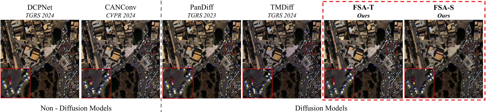
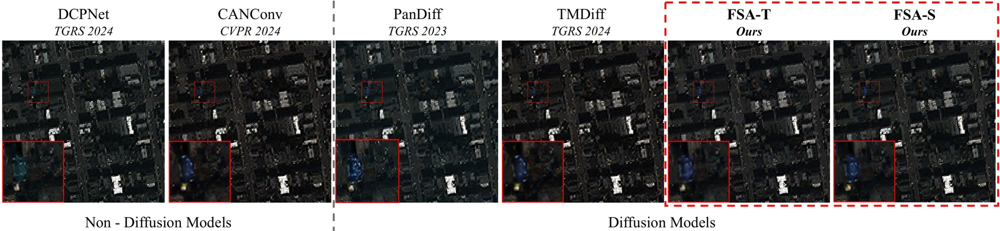
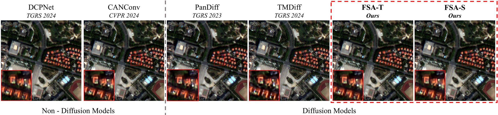
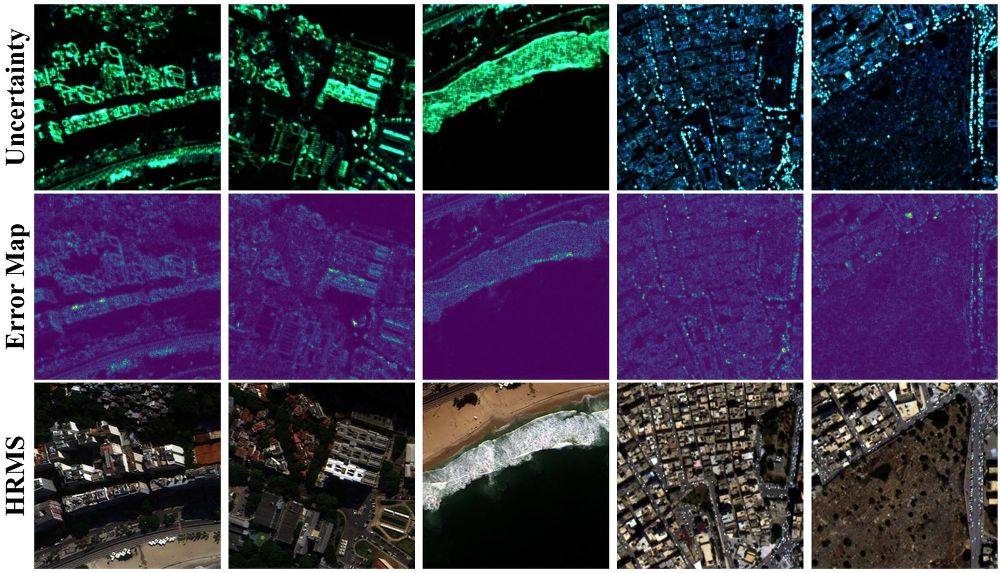

Lighter student, finer details
A diffusion teacher’s uncertainty map guides a lightweight student to difficult regions, such as cars.

From LRMS to HRMS
U-Know-DiffPAN outputs next to the upsampled LRMS input, on a reduced- and a full-resolution test image of each satellite. Select a tile to open the comparison slider.
Use the arrows or the ← → keys to switch between reduced and full resolution · click a tile to open the comparison sliderSwipe or use the arrows to switch resolution · tap a tile to open the comparison slider
Paper figures
Nine methods at reduced resolution, with error maps and MAE against the ground truth; six at full resolution, where no ground truth exists; and the teacher’s uncertainty maps.











Quantitative results
FSA-T or FSA-S is best on every reduced-resolution metric on WV3, QB and GF2; on WV3 and QB, the lightweight student surpasses its teacher on several metrics.
| Method | Venue | WV3 (Reduced-Resolution) | QB (Reduced-Resolution) | ||||||||||
|---|---|---|---|---|---|---|---|---|---|---|---|---|---|
| PSNR↑ | SSIM↑ | SAM↓ | ERGAS↓ | SCC↑ | Q8↑ | PSNR↑ | SSIM↑ | SAM↓ | ERGAS↓ | SCC↑ | Q4↑ | ||
| Non-diffusion models | |||||||||||||
| PanNet | ICCV'17 | 36.148 | 0.966 | 3.402 | 2.538 | 0.979 | 0.913 | 35.563 | 0.939 | 5.273 | 4.856 | 0.966 | 0.911 |
| MSDCNN | JSTARS'18 | 36.329 | 0.967 | 3.300 | 2.489 | 0.979 | 0.914 | 37.040 | 0.954 | 4.828 | 4.074 | 0.977 | 0.925 |
| FusionNet | ICCV'21 | 36.569 | 0.968 | 3.188 | 2.428 | 0.981 | 0.916 | 36.821 | 0.952 | 4.892 | 4.183 | 0.975 | 0.923 |
| LAGConv | AAAI'22 | 36.732 | 0.970 | 3.153 | 2.380 | 0.981 | 0.916 | 37.565 | 0.958 | 4.682 | 3.845 | 0.980 | 0.930 |
| S2DBPN | TGRS'23 | 37.216 | 0.972 | 3.019 | 2.245 | 0.985 | 0.917 | 37.314 | 0.956 | 4.849 | 3.956 | 0.980 | 0.928 |
| DCPNet | TGRS'24 | 37.009 | 0.972 | 3.083 | 2.301 | 0.984 | 0.915 | 38.079 | 0.963 | 4.420 | 3.618 | 0.983 | 0.935 |
| CANConv | CVPR'24 | 37.441 | 0.973 | 2.927 | 2.163 | 0.985 | 0.918 | 37.795 | 0.960 | 4.554 | 3.740 | 0.982 | 0.935 |
| Diffusion models | |||||||||||||
| PanDiff | TGRS'23 | 37.029 | 0.971 | 3.058 | 2.276 | 0.984 | 0.913 | 37.842 | 0.959 | 4.611 | 3.723 | 0.982 | 0.935 |
| TMDiff | TGRS'24 | 37.477 | 0.973 | 2.885 | 2.151 | 0.986 | 0.915 | 37.642 | 0.958 | 4.627 | 3.804 | 0.981 | 0.930 |
| FSA-S | Ours | 37.930 | 0.976 | 2.797 | 2.046 | 0.988 | 0.922 | 38.361 | 0.964 | 4.337 | 3.500 | 0.984 | 0.938 |
| FSA-T | Ours | 37.894 | 0.976 | 2.801 | 2.055 | 0.987 | 0.921 | 38.343 | 0.964 | 4.349 | 3.502 | 0.985 | 0.938 |
FSA-T is the teacher and FSA-S the distilled student, with 25.492M and 9.115M parameters (Table 4).
| Method | Venue | Reduced-Resolution | Full-Resolution | |||||||
|---|---|---|---|---|---|---|---|---|---|---|
| PSNR↑ | SSIM↑ | SAM↓ | ERGAS↓ | SCC↑ | Q4↑ | Dλ↓ | Ds↓ | HQNR↑ | ||
| Non-diffusion models | ||||||||||
| PanNet | ICCV'17 | 39.197 | 0.959 | 1.050 | 1.038 | 0.975 | 0.963 | 0.020 | 0.052 | 0.929 |
| MSDCNN | JSTARS'18 | 40.730 | 0.971 | 0.946 | 0.862 | 0.983 | 0.972 | 0.026 | 0.079 | 0.898 |
| FusionNet | ICCV'21 | 39.866 | 0.966 | 0.971 | 0.960 | 0.980 | 0.967 | 0.034 | 0.105 | 0.865 |
| LAGConv | AAAI'22 | 41.147 | 0.974 | 0.886 | 0.816 | 0.985 | 0.974 | 0.030 | 0.078 | 0.895 |
| S2DBPN | TGRS'23 | 42.686 | 0.980 | 0.772 | 0.686 | 0.990 | 0.981 | 0.020 | 0.046 | 0.935 |
| DCPNet | TGRS'24 | 42.312 | 0.979 | 0.806 | 0.724 | 0.988 | 0.980 | 0.024 | 0.024 | 0.953 |
| CANConv | CVPR'24 | 43.166 | 0.982 | 0.722 | 0.653 | 0.991 | 0.983 | 0.019 | 0.063 | 0.919 |
| Diffusion models | ||||||||||
| PanDiff | TGRS'23 | 42.827 | 0.980 | 0.767 | 0.674 | 0.990 | 0.981 | 0.020 | 0.045 | 0.936 |
| TMDiff | TGRS'24 | 41.896 | 0.977 | 0.764 | 0.754 | 0.988 | 0.979 | 0.029 | 0.030 | 0.942 |
| FSA-S | Ours | 44.585 | 0.986 | 0.624 | 0.548 | 0.993 | 0.987 | 0.018 | 0.037 | 0.944 |
| FSA-T | Ours | 44.757 | 0.988 | 0.603 | 0.537 | 0.994 | 0.988 | 0.017 | 0.029 | 0.953 |
| Method | Params. (M) | FLOPs (T) | Time (s) | Memory (GB) |
|---|---|---|---|---|
| PanDiff | 12.556 | 0.471 | 19.522 | 3.260 |
| TMDiff | 153.939 | 5.517 | 67.461 | 10.483 |
| FSA-T | 25.492 | 1.402 | 25.495 | 5.910 |
| FSA-S | 9.115 | 0.346 | 12.287 | 2.136 |
Among the diffusion models, FSA-S has the fewest parameters and FLOPs, the shortest inference time and the lowest memory use.
Full resolution and standard deviations Table 8
| Model | Reduced-Resolution | Full-Resolution | |||||||
|---|---|---|---|---|---|---|---|---|---|
| PSNR↑ | SSIM↑ | SAM↓ | ERGAS↓ | SCC↑ | Q8↑ | Dλ↓ | Ds↓ | HQNR↑ | |
| PanNet | 36.148 ± 1.958 | 0.966 ± 0.011 | 3.402 ± 0.672 | 2.538 ± 0.597 | 0.979 ± 0.006 | 0.913 ± 0.087 | 0.035 ± 0.014 | 0.049 ± 0.019 | 0.918 ± 0.031 |
| MSDCNN | 36.329 ± 1.748 | 0.967 ± 0.010 | 3.300 ± 0.654 | 2.489 ± 0.620 | 0.979 ± 0.007 | 0.914 ± 0.087 | 0.028 ± 0.013 | 0.050 ± 0.020 | 0.924 ± 0.030 |
| FusionNet | 36.569 ± 1.666 | 0.968 ± 0.009 | 3.188 ± 0.628 | 2.428 ± 0.621 | 0.981 ± 0.007 | 0.916 ± 0.087 | 0.029 ± 0.011 | 0.053 ± 0.021 | 0.920 ± 0.030 |
| LAGNet | 36.732 ± 1.723 | 0.970 ± 0.009 | 3.153 ± 0.608 | 2.380 ± 0.617 | 0.981 ± 0.007 | 0.916 ± 0.087 | 0.033 ± 0.012 | 0.055 ± 0.023 | 0.915 ± 0.033 |
| S2DBPN | 37.216 ± 1.888 | 0.972 ± 0.009 | 3.019 ± 0.588 | 2.245 ± 0.541 | 0.985 ± 0.005 | 0.917 ± 0.091 | 0.025 ± 0.010 | 0.030 ± 0.010 | 0.946 ± 0.018 |
| DCPNet | 37.009 ± 1.735 | 0.972 ± 0.008 | 3.083 ± 0.537 | 2.301 ± 0.569 | 0.984 ± 0.005 | 0.915 ± 0.092 | 0.043 ± 0.018 | 0.036 ± 0.012 | 0.923 ± 0.027 |
| CANConv | 37.441 ± 1.788 | 0.973 ± 0.008 | 2.927 ± 0.536 | 2.163 ± 0.481 | 0.985 ± 0.005 | 0.918 ± 0.082 | 0.020 ± 0.008 | 0.030 ± 0.008 | 0.951 ± 0.013 |
| PanDiff | 37.029 ± 1.796 | 0.971 ± 0.008 | 3.058 ± 0.567 | 2.276 ± 0.545 | 0.984 ± 0.004 | 0.913 ± 0.084 | 0.014 ± 0.005 | 0.034 ± 0.005 | 0.952 ± 0.009 |
| TMDiff | 37.477 ± 1.923 | 0.973 ± 0.008 | 2.885 ± 0.549 | 2.151 ± 0.458 | 0.986 ± 0.004 | 0.915 ± 0.086 | 0.018 ± 0.007 | 0.059 ± 0.009 | 0.924 ± 0.015 |
| FSA-T | 37.894 ± 1.820 | 0.976 ± 0.007 | 2.801 ± 0.517 | 2.055 ± 0.463 | 0.987 ± 0.003 | 0.921 ± 0.083 | 0.014 ± 0.005 | 0.032 ± 0.003 | 0.954 ± 0.006 |
| FSA-S | 37.930 ± 1.824 | 0.976 ± 0.007 | 2.797 ± 0.526 | 2.046 ± 0.454 | 0.988 ± 0.003 | 0.922 ± 0.083 | 0.016 ± 0.006 | 0.029 ± 0.003 | 0.955 ± 0.008 |
| Model | Reduced-Resolution | Full-Resolution | |||||||
|---|---|---|---|---|---|---|---|---|---|
| PSNR↑ | SSIM↑ | SAM↓ | ERGAS↓ | SCC↑ | Q4↑ | Dλ↓ | Ds↓ | HQNR↑ | |
| PanNet | 35.563 ± 1.930 | 0.939 ± 0.012 | 5.273 ± 0.946 | 4.856 ± 0.590 | 0.966 ± 0.015 | 0.911 ± 0.094 | 0.063 ± 0.019 | 0.092 ± 0.021 | 0.851 ± 0.035 |
| MSDCNN | 37.040 ± 1.778 | 0.954 ± 0.007 | 4.828 ± 0.824 | 4.074 ± 0.244 | 0.977 ± 0.010 | 0.925 ± 0.098 | 0.058 ± 0.014 | 0.058 ± 0.027 | 0.888 ± 0.037 |
| FusionNet | 36.821 ± 1.765 | 0.952 ± 0.007 | 4.892 ± 0.822 | 4.183 ± 0.266 | 0.975 ± 0.011 | 0.923 ± 0.100 | 0.074 ± 0.022 | 0.079 ± 0.025 | 0.853 ± 0.041 |
| LAGNet | 37.565 ± 1.721 | 0.958 ± 0.006 | 4.682 ± 0.785 | 3.845 ± 0.323 | 0.980 ± 0.009 | 0.930 ± 0.095 | 0.075 ± 0.019 | 0.035 ± 0.009 | 0.892 ± 0.024 |
| S2DBPN | 37.314 ± 1.782 | 0.956 ± 0.006 | 4.849 ± 0.822 | 3.956 ± 0.291 | 0.980 ± 0.008 | 0.928 ± 0.093 | 0.059 ± 0.026 | 0.036 ± 0.023 | 0.908 ± 0.044 |
| DCPNet | 38.079 ± 1.454 | 0.963 ± 0.004 | 4.420 ± 0.710 | 3.618 ± 0.313 | 0.983 ± 0.010 | 0.935 ± 0.095 | 0.051 ± 0.017 | 0.073 ± 0.013 | 0.880 ± 0.013 |
| CANConv | 37.795 ± 1.801 | 0.960 ± 0.006 | 4.554 ± 0.788 | 3.740 ± 0.304 | 0.982 ± 0.007 | 0.935 ± 0.087 | 0.039 ± 0.012 | 0.070 ± 0.017 | 0.893 ± 0.010 |
| PanDiff | 37.842 ± 1.721 | 0.959 ± 0.006 | 4.611 ± 0.768 | 3.723 ± 0.280 | 0.982 ± 0.007 | 0.935 ± 0.084 | 0.028 ± 0.011 | 0.055 ± 0.012 | 0.919 ± 0.010 |
| TMDiff | 37.642 ± 1.831 | 0.958 ± 0.006 | 4.627 ± 0.814 | 3.804 ± 0.279 | 0.981 ± 0.008 | 0.930 ± 0.096 | 0.034 ± 0.016 | 0.068 ± 0.012 | 0.901 ± 0.011 |
| FSA-T | 38.343 ± 1.718 | 0.964 ± 0.005 | 4.349 ± 0.723 | 3.502 ± 0.272 | 0.985 ± 0.007 | 0.938 ± 0.089 | 0.036 ± 0.018 | 0.031 ± 0.014 | 0.934 ± 0.029 |
| FSA-S | 38.361 ± 1.709 | 0.964 ± 0.005 | 4.337 ± 0.733 | 3.500 ± 0.272 | 0.984 ± 0.007 | 0.938 ± 0.090 | 0.035 ± 0.011 | 0.035 ± 0.021 | 0.931 ± 0.029 |
| Model | Reduced-Resolution | Full-Resolution | |||||||
|---|---|---|---|---|---|---|---|---|---|
| PSNR↑ | SSIM↑ | SAM↓ | ERGAS↓ | SCC↑ | Q4↑ | Dλ↓ | Ds↓ | HQNR↑ | |
| PanNet | 39.197 ± 2.009 | 0.959 ± 0.011 | 1.050 ± 0.209 | 1.038 ± 0.214 | 0.975 ± 0.006 | 0.963 ± 0.009 | 0.020 ± 0.012 | 0.052 ± 0.009 | 0.929 ± 0.013 |
| MSDCNN | 40.730 ± 1.564 | 0.971 ± 0.006 | 0.946 ± 0.166 | 0.862 ± 0.141 | 0.983 ± 0.003 | 0.972 ± 0.009 | 0.026 ± 0.014 | 0.079 ± 0.011 | 0.898 ± 0.016 |
| FusionNet | 39.866 ± 1.955 | 0.966 ± 0.009 | 0.971 ± 0.195 | 0.960 ± 0.193 | 0.980 ± 0.005 | 0.967 ± 0.008 | 0.034 ± 0.013 | 0.105 ± 0.013 | 0.865 ± 0.018 |
| LAGNet | 41.147 ± 1.384 | 0.974 ± 0.005 | 0.886 ± 0.140 | 0.816 ± 0.121 | 0.985 ± 0.003 | 0.974 ± 0.009 | 0.030 ± 0.014 | 0.078 ± 0.013 | 0.895 ± 0.021 |
| S2DBPN | 42.686 ± 1.676 | 0.980 ± 0.005 | 0.772 ± 0.149 | 0.686 ± 0.125 | 0.990 ± 0.002 | 0.981 ± 0.007 | 0.020 ± 0.012 | 0.046 ± 0.007 | 0.935 ± 0.011 |
| DCPNet | 42.312 ± 1.682 | 0.979 ± 0.005 | 0.806 ± 0.153 | 0.724 ± 0.138 | 0.988 ± 0.003 | 0.980 ± 0.007 | 0.024 ± 0.022 | 0.024 ± 0.008 | 0.953 ± 0.019 |
| CANConv | 43.166 ± 1.705 | 0.982 ± 0.004 | 0.722 ± 0.138 | 0.653 ± 0.124 | 0.991 ± 0.002 | 0.983 ± 0.006 | 0.019 ± 0.010 | 0.063 ± 0.009 | 0.919 ± 0.011 |
| PanDiff | 42.827 ± 1.462 | 0.980 ± 0.005 | 0.767 ± 0.134 | 0.674 ± 0.110 | 0.990 ± 0.002 | 0.981 ± 0.007 | 0.020 ± 0.014 | 0.045 ± 0.009 | 0.936 ± 0.011 |
| TMDiff | 41.896 ± 1.765 | 0.977 ± 0.005 | 0.764 ± 0.155 | 0.754 ± 0.143 | 0.988 ± 0.003 | 0.979 ± 0.007 | 0.029 ± 0.011 | 0.030 ± 0.010 | 0.942 ± 0.016 |
| FSA-T | 44.757 ± 1.359 | 0.988 ± 0.003 | 0.603 ± 0.102 | 0.537 ± 0.077 | 0.994 ± 0.001 | 0.988 ± 0.006 | 0.017 ± 0.010 | 0.030 ± 0.008 | 0.953 ± 0.013 |
| FSA-S | 44.585 ± 1.521 | 0.986 ± 0.003 | 0.624 ± 0.109 | 0.548 ± 0.091 | 0.993 ± 0.001 | 0.987 ± 0.007 | 0.018 ± 0.011 | 0.037 ± 0.007 | 0.944 ± 0.012 |
Ablations Tables 5, 6 and 7
| Encoder FFA |
Decoder HQFE |
GF2 (Reduced-Resolution) | |||
|---|---|---|---|---|---|
| SAM↓ | ERGAS↓ | SCC↑ | Q4↑ | ||
| 0.654 ± 0.112 | 0.661 ± 0.076 | 0.992 ± 0.001 | 0.986 ± 0.007 | ||
| ✓ | 0.654 ± 0.112 | 0.636 ± 0.077 | 0.993 ± 0.002 | 0.986 ± 0.007 | |
| ✓ | 0.617 ± 0.117 | 0.556 ± 0.104 | 0.993 ± 0.002 | 0.987 ± 0.007 | |
| ✓ | ✓ | 0.603 ± 0.102 | 0.537 ± 0.077 | 0.994 ± 0.001 | 0.988 ± 0.006 |
| Loss func. | GF2 (Full-Resolution) | ||
|---|---|---|---|
| Dλ↓ | Ds↓ | HQNR↑ | |
| ℒ1 | 0.026 ± 0.014 | 0.040 ± 0.017 | 0.935 ± 0.020 |
| ℒKD | 0.025 ± 0.015 | 0.038 ± 0.016 | 0.938 ± 0.021 |
| ℒU-know | 0.018 ± 0.011 | 0.037 ± 0.007 | 0.944 ± 0.012 |
| Condition | GF2 (Reduced-Resolution) | |||
|---|---|---|---|---|
| SAM↓ | ERGAS↓ | SCC↑ | Q4↑ | |
| DWT | 0.646 ± 0.117 | 0.567 ± 0.095 | 0.993 ± 0.002 | 0.987 ± 0.007 |
| SWT | 0.603 ± 0.102 | 0.537 ± 0.077 | 0.994 ± 0.001 | 0.988 ± 0.006 |
Datasets Table 1
| Satellite | WorldView-3 | QuickBird | GaoFen-2 | |
|---|---|---|---|---|
| Number of Band | 8 | 4 | 4 | |
| Spatial Resolution (m) | PAN | 0.3 | 0.6 | 0.8 |
| LRMS | 1.2 | 2.4 | 3.2 | |
| Radiometric Resolution (bit) | 11 | 11 | 10 | |
| Number of (Train / Test) Images | 9,714 / 20 | 17,139 / 20 | 19,809 / 20 | |
| Patch Size | PAN | 64×64×1 | 64×64×1 | 64×64×1 |
| LRMS | 16×16×8 | 16×16×4 | 16×16×4 | |
Trust the teacher where it is certain

- 01Frequency-selective teacher. FSA-T conditions its encoder on a compact vector of PAN and LRMS (FFA blocks); in its decoder, HQFE blocks refine frequencies with Fourier attention (FTCA) and inject stationary-wavelet components of PAN and LRMS by cross-attention (SWTCA).
- 02Uncertainty from the teacher. Trained with an uncertainty-driven diffusion loss, FSA-T predicts the residual together with a pixel-wise uncertainty map θ̂, which is high on object edges.
- 03Uncertainty-aware distillation. The student FSA-S (ResBlocks only) learns from the ground truth weighted by τ + θ̂, from the teacher’s output weighted by τ − θ̂, and from the teacher’s intermediate features.
BibTeX
@inproceedings{kim2025uknowdiffpan,
title={U-Know-DiffPAN: An uncertainty-aware knowledge distillation diffusion framework with details enhancement for PAN-sharpening},
author={Kim, Sungpyo and Do, Jeonghyeok and Lee, Jaehyup and Kim, Munchurl},
booktitle={2025 IEEE/CVF Conference on Computer Vision and Pattern Recognition (CVPR)},
pages={23069--23079},
year={2025},
organization={IEEE}
}